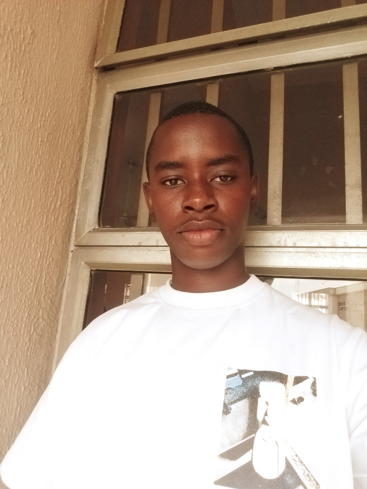

Esi Ogheneruona Richard

Summary
I am hardworking, reliable, puncutual, can adapt to my environment and I have experience in computer operating.
My objective is to become a good Web Developer.
Education
- Alden Nusery and Primary School - First School Leaving Certificate (FSLC) (2012-2016)
- Royal Heritage Group of Schools - Senior Secondary Certificate (SSC) (2017-2022)
- No University Education Yet.
Work Experience
Skills
- Adaptability
- Communication
- Customer Service
- Teamwork
Award and Certification
- Computer Certificate - Hi- Tec Computer (October 2024)
Other